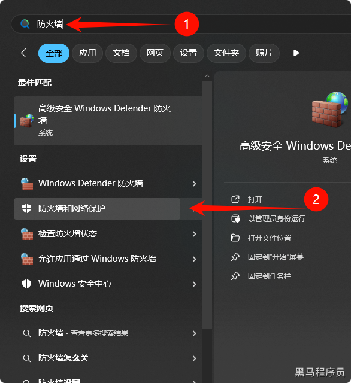
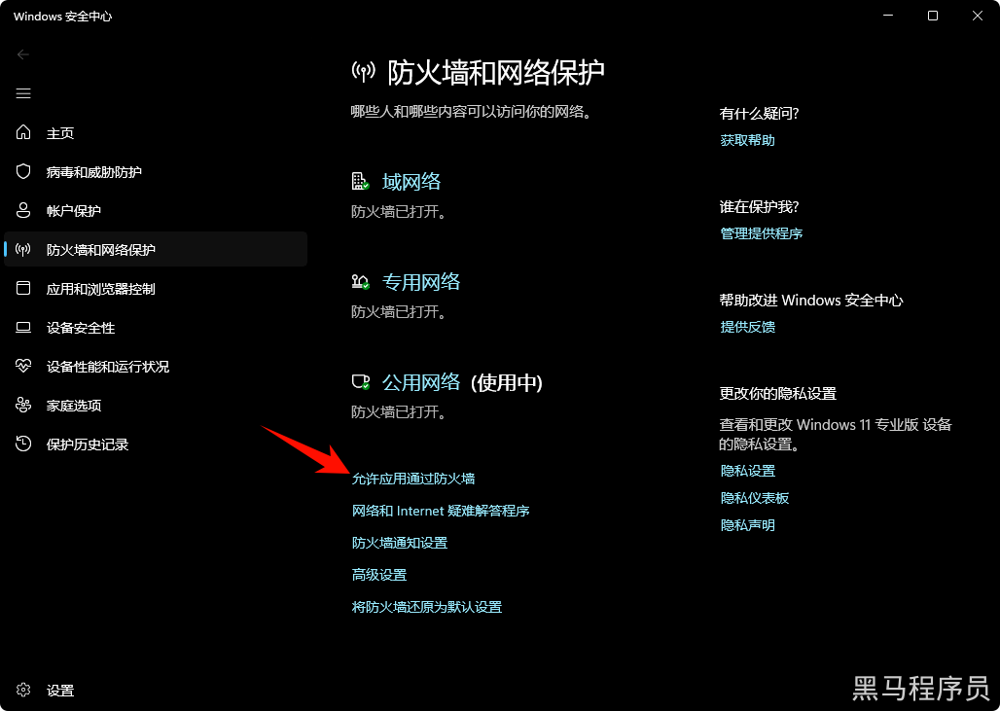
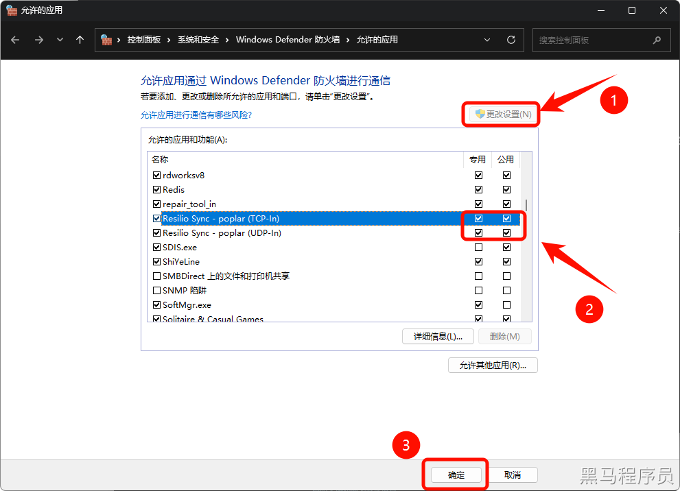

<!DOCTYPE lake>
<h2 data-lake-id="O0Gw6" id="O0Gw6"><span data-lake-id="u1bf89ea9" id="u1bf89ea9">无法连接</span></h2><p data-lake-id="u7207c98c" id="u7207c98c"><span data-lake-id="u38f25398" id="u38f25398">关闭防火墙，或者允许应用通过防火墙</span></p><ol list="u9e9a75c8"><li data-lake-id="uaf727da3" fid="u83c29721" id="uaf727da3"><span data-lake-id="u6bb0772e" id="u6bb0772e">按下Win键， 输入</span><strong><span data-lake-id="ue7816af5" id="ue7816af5">防火墙</span></strong></li></ol><p data-lake-id="uee5c4278" id="uee5c4278"></p><ol list="u9922d622" start="2"><li data-lake-id="u3b096d32" fid="ub6941256" id="u3b096d32"><span data-lake-id="u3d9bf1a3" id="u3d9bf1a3">选择防火墙和网络保护</span></li><li data-lake-id="u0003e460" fid="ub6941256" id="u0003e460"><span data-lake-id="uc3e08113" id="uc3e08113">点击“允许应用通过防火墙”</span></li></ol><p data-lake-id="udfc57167" id="udfc57167"></p><ol list="ue1663b53" start="4"><li data-lake-id="u5a6b0fa2" fid="ueb3d3ba6" id="u5a6b0fa2"><span data-lake-id="u4e334eba" id="u4e334eba">点击【更改设置】，按照如下勾选，点击【确定】</span></li></ol><p data-lake-id="u1308c416" id="u1308c416"></p>